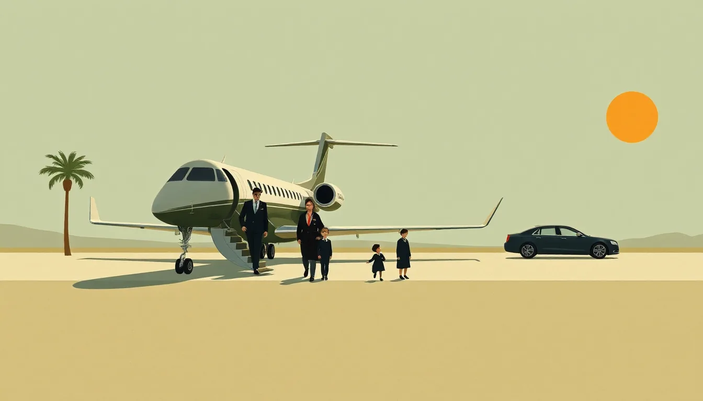
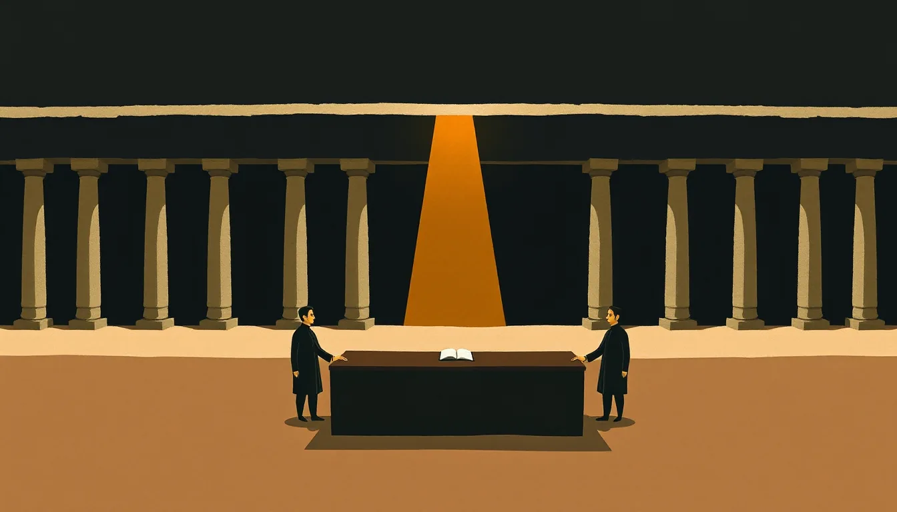
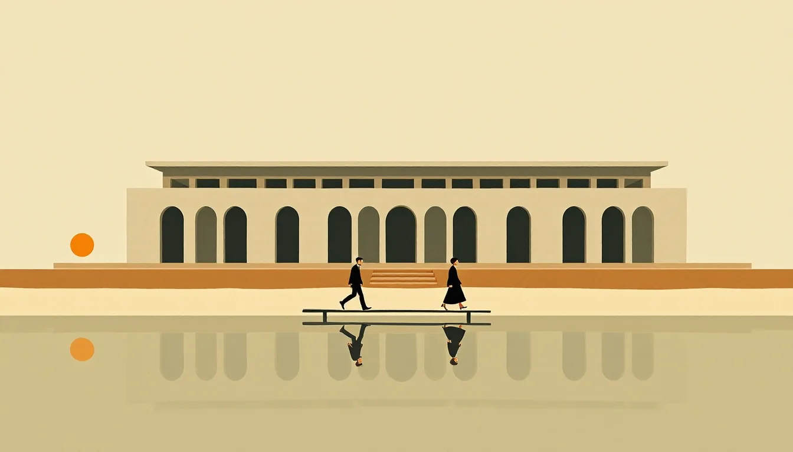
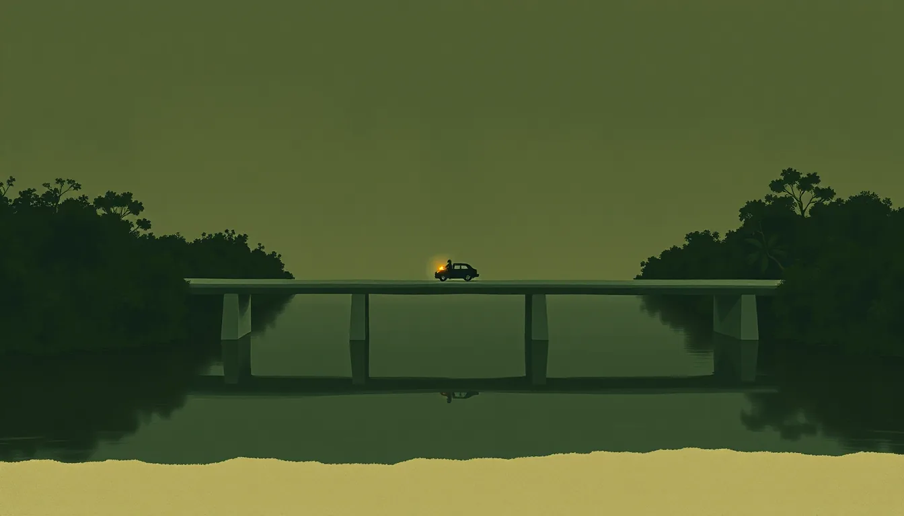
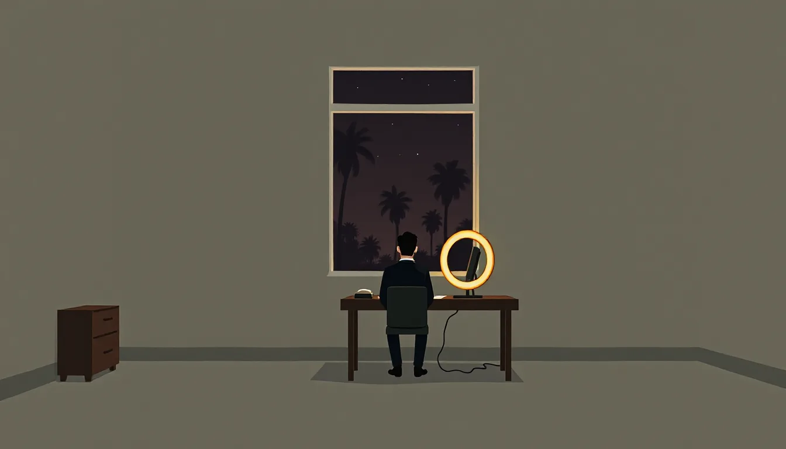
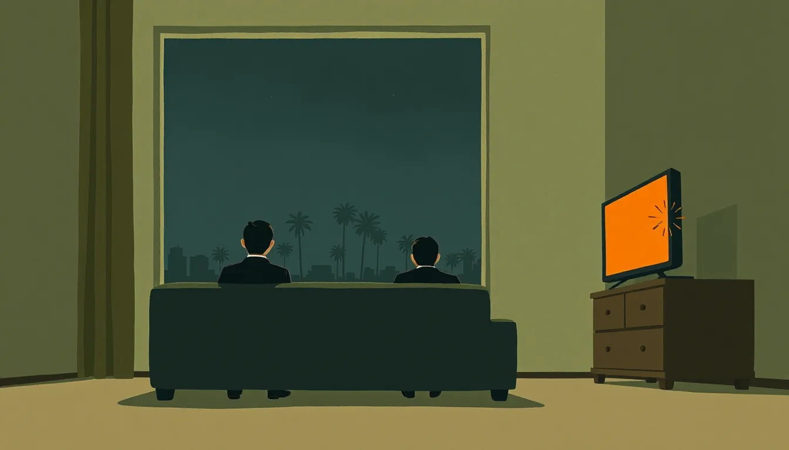

Fim do capítulo 1 · A carta
A linha do tempo que você escolheu
-

Miami, 28 de outubro
Flávio chega a Miami com uma carta.
-

Brasília
Moraes não prende, mas bloqueia parte dos bens
36% dos jogadores escolheram o mesmo que você
em outras linhas do tempo: 3 caminhos
-

Itamaraty
Mauro Vieira leva o caso a Rubio, sem nota
6% escolheram o mesmo. A escolha mais rara do seu capítulo.
em outras linhas do tempo: 3 caminhos
-

Buenos Aires
A investigação chega perto do governo Milei
44% escolheram o mesmo
em outras linhas do tempo: 2 caminhos
-

Miami
Flávio pede asilo político nos Estados Unidos
58% escolheram o mesmo
Poucas partidas passaram por aqui ainda. O número aparece a partir de 50.
em outras linhas do tempo: 3 caminhos
-

Estados Unidos, 3 de novembro
Os democratas ganham a Câmara e o Senado
68% apostaram nisso. A realidade decide em 3 de novembro.
em outras linhas do tempo: 2 caminhos
Este capítulo tem 1.204 caminhos possíveis. Você viveu um.
O que os jogadores escolheram